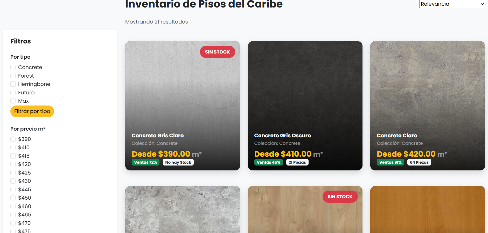
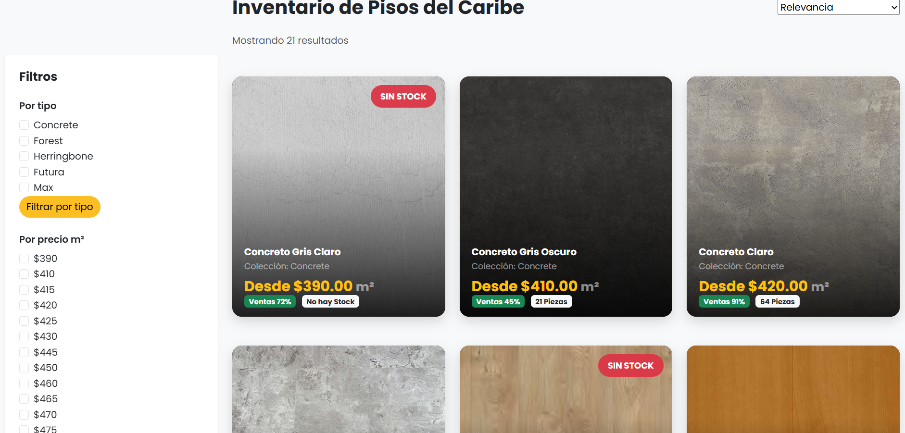

RebuilWare

En la materia de Tópicos de Calidad para el Diseño de Software, se realizó la entrega del Proyecto Final
correspondiente al cuatrimestre Mayo-Agosto 2025, para la Unidad 3. El trabajo se desarrolló en equipos
de cinco
integrantes.
La página principal del proyecto estaba enfocada en ofrecer servicios de mantenimiento de cómputo; sin
embargo, cada integrante debía diseñar una sección específica. En mi caso, me correspondió la sección de
proveedores.
Se elaboró el diseño de 10 secciones adaptadas para Desktop, Laptop, Tablet y Mobile. Cabe destacar que
únicamente se trabajó en el diseño visual, sin llegar a la etapa de codificación.
Todo se realizó utilizando la aplicación Figma.
MapCun
En la materia de Proyecto Integrado I, se desarrolló un sistema de transporte público como entrega del
Proyecto Final correspondiente al cuatrimestre Mayo-Agosto 2025, específicamente para la Unidad 3.
El proyecto constó de las siguientes secciones: Home, Camiones, Combis, Buscar y Login. Fue realizado en
un equipo de tres integrantes; en mi caso, me correspondió desarrollar la sección del buscador.
Las tecnologías utilizadas fueron:
Frontend: HTML, CSS y JavaScript.
Backend: PHP nativo.
Base de datos: MySQL.

Salud Total
En la materia de Desarrollo de Aplicaciones Web, se realizó el sistema de inventario para una farmacia
como parte del examen de la Unidad 3, correspondiente al cuatrimestre Septiembre-Diciembre 2025.
El proyecto fue desarrollado en equipos de tres integrantes y consistió en un login, un panel y la
creación de usuarios, con el objetivo de fortalecer las competencias relacionadas con el Backend y el
CRUD.
En mi caso, me correspondió realizar la sección de Login y Creación de Usuario, donde trabajé tanto en
el Frontend como en el Backend. Además, implementé el enlace a la base de datos y la funcionalidad de
logout.
Las tecnologías utilizadas fueron:
Frontend: HTML, CSS, JavaScript y Bootstrap.
Backend: PHP nativo.
Base de datos: MySQL.


 
